Erreur de dépose ou de prise d'outil par l'ATC
La prise ou la dépose d'un outil ou d'un WP provoque une erreur.
Cette erreur peut avoir plusieurs causes ; voici quelques scénarios.
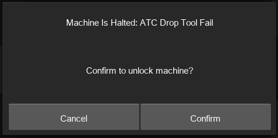
Scénarios :
- Aucun outil n'est disponible pour être pris.
- Une pince incorrecte est utilisée.
- Une pince plus petite pousse la fraise dans le porte-outil.
- Une pince plus grande ne prend pas du tout la fraise.
- L'outil a été légèrement tiré hors du porte-outil ou enfoncé dans celui-ci. (Voir la rubrique «Désalignement de l'ATC »)
- Une erreur se produit après la détection de l'outil (voir «problème du capteur de détection d'outil »)
- L'outil reste dans la pince après la commande de dépose (voir «L'outil reste dans la pince après sa libération »)
- La position de l'outil est occupée.
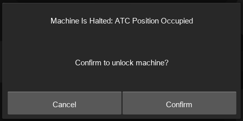
Désalignement de l'ATC
Le désalignement de l'ATC se produit lorsque vous constatez un décalage entre l'endroit où la fraise est déposée et le porte-outil.
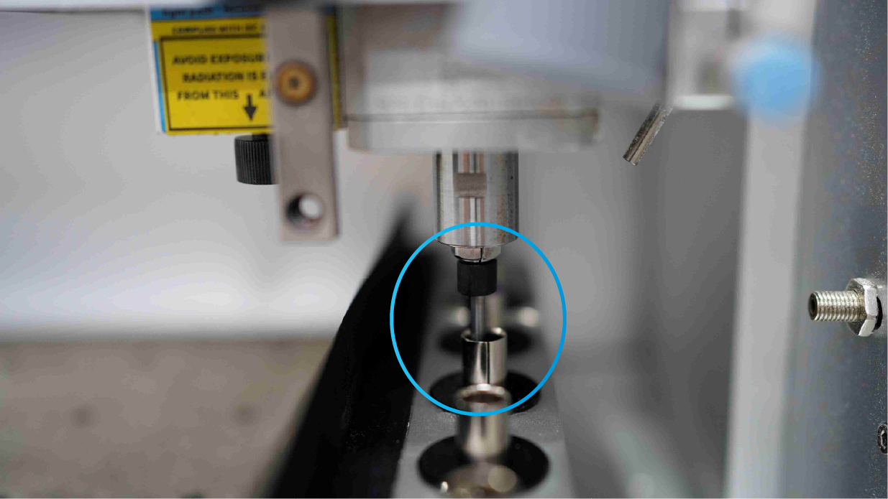
Le désalignement de l'ATC peut provoquer plusieurs scénarios.
- la fraise se soulève légèrement du porte-outil après la dépose de l'outil.
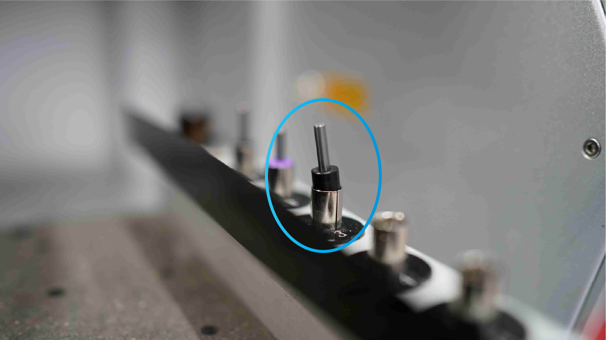
- écrase la fraise dans le porte-fraise lors de la dépose.
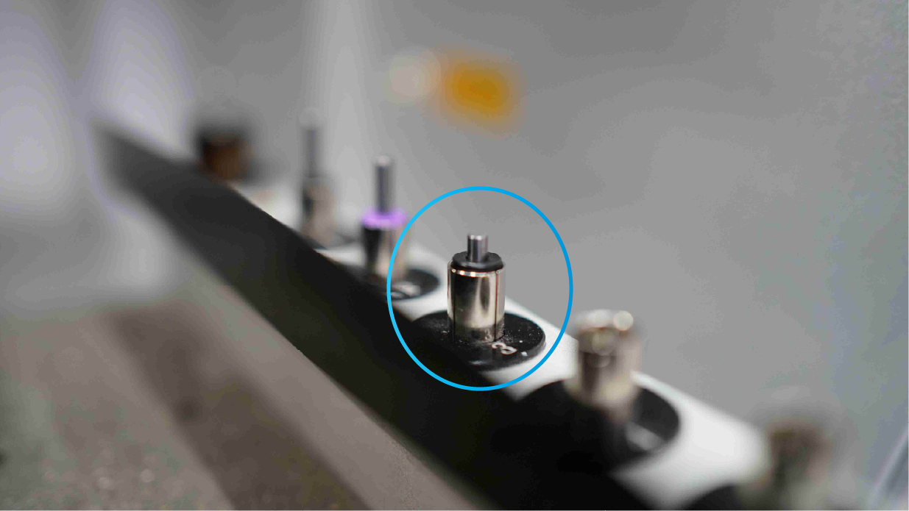
- La fraise reste dans la pince après la dépose
Étape 1
- Vérifiez le jeu sur tous les axes (voir «Jeu des axes X, Y et Z »)
S'il y a du jeu sur l'un des axes, suivez les instructions et passez à l'étape 2.
- Vérifiez si l'une des fins de course est desserrée.
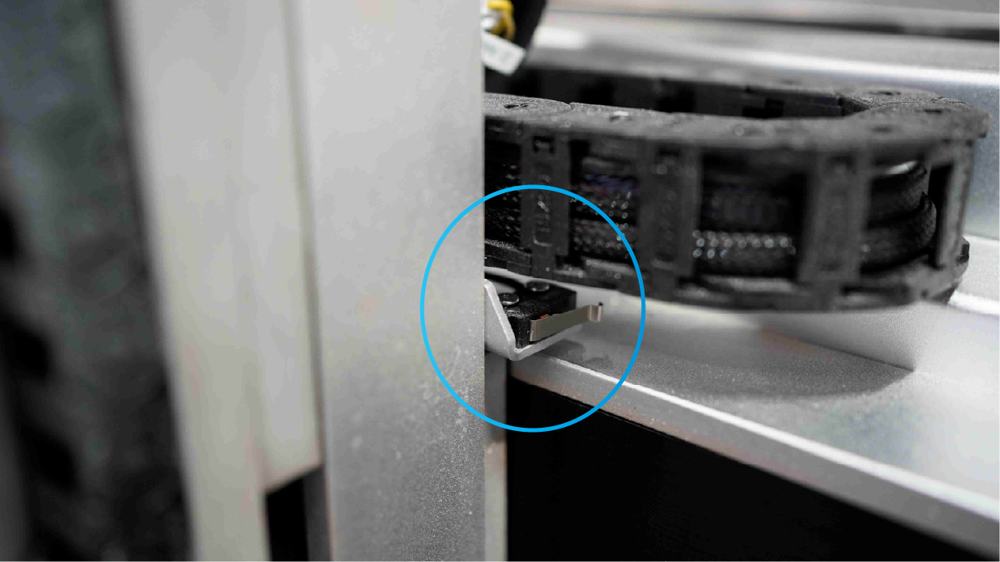
Si une fin de course est desserrée, resserrez-la et passez à l'étape 2.
Étape 2
Effectuez un palpage XYZ manuel au point d'ancrage 1 et réajustez la valeur dans le menu des réglages.
- Déplacez la tête de broche au-dessus du point d'ancrage 1
- Branchez le palpeur manuel sur le côté du plateau de la machine et fixez l'aimant sur le côté du porte-pince
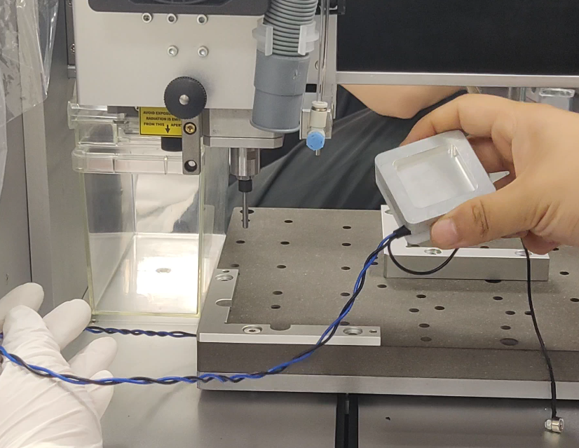
- Utilisez un matériau de guidage d'équerre pour maintenir le palpeur en position, puis effectuez le palpage XYZ
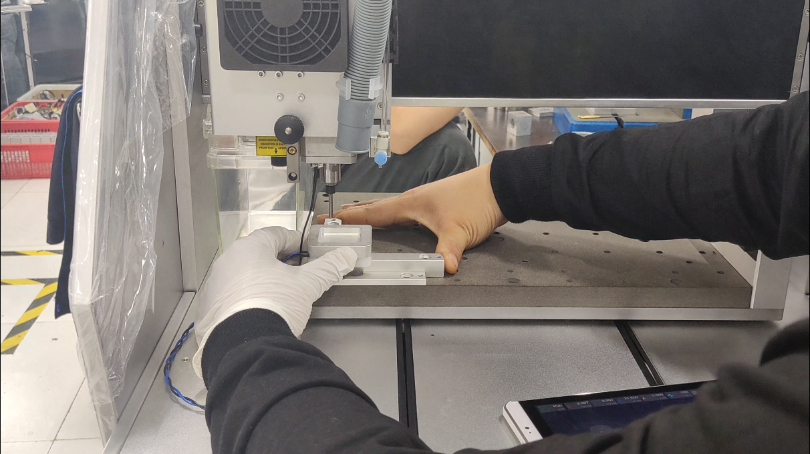
- Notez les coordonnées X et Y dans la barre d'outils supérieure.
- Accédez aux réglages avancés et ajustez les coordonnées X et Y aux valeurs indiquées ci-dessus.
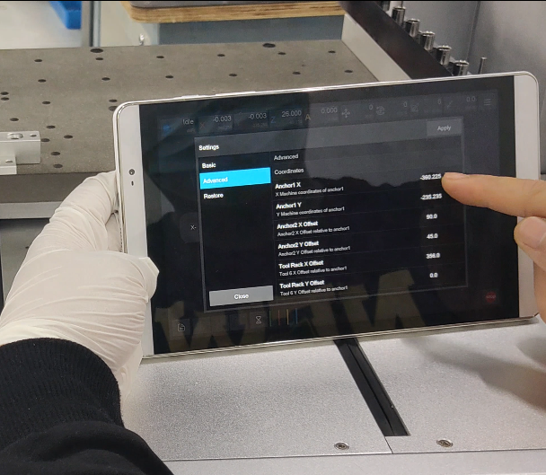
- Réinitialisez la machine et réessayez.
Si l'étape 2 ne corrige pas le décalage, passez à l'étape 3
Étape 3
Effectuez un réglage manuel du décalage du rack d'outils.
1. Déposez l'outil depuis la barre d'outils.
2. Juste avant qu'il n'entre dans le porte-outil, arrêtez la machine avec le bouton avant.
3. Déverrouillez la machine, puis vérifiez si le positionnement n'est pas au centre du porte-outil.
4. Déplacez manuellement X\Y pour mesurer l'importance du décalage et notez la mesure. (Soyez très prudent lorsque vous déplacez X/Y ; réglez le pas sur 0.1mm)
5. Dans le menu des réglages avancés, ajustez le paramètre « tool rack offset » conformément à la mesure notée.
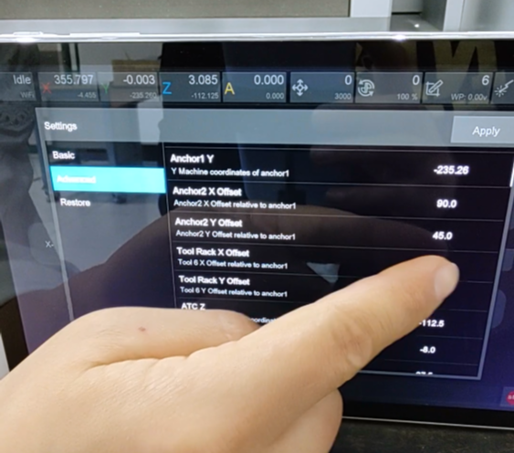
6. Ajoutez ou soustrayez la mesure notée, puis cliquez sur Apply.
7. Réinitialisez la machine et vérifiez que l'outil se positionne au centre du porte-outil.
8. S'il n'est toujours pas centré, répétez la procédure.
9. Si l'erreur de désalignement persiste (contactez le support)
Problème du détecteur d'outil de l'ATC
Une erreur se produit après l'opération de détection de l'outil
Le capteur d'outil détecte la présence ou l'absence d'une fraise dans le porte-outil en projetant un laser sur la tige de l'outil
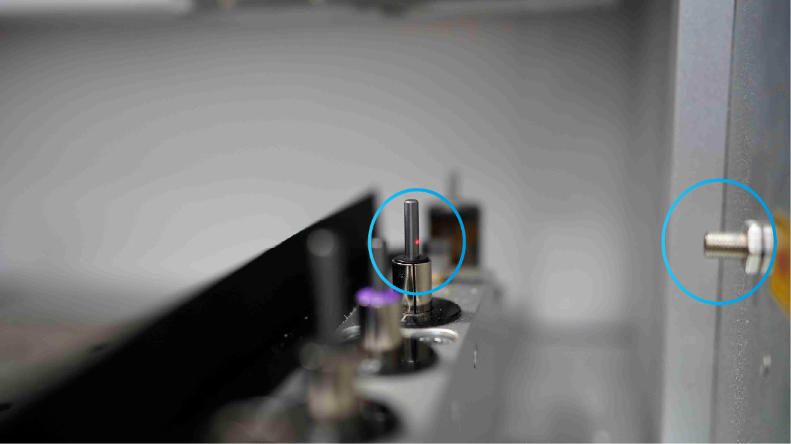
- Diagnostics
Accédez au menu de diagnostic du contrôleur et activez « ToolSensorPWR »
Utilisez un outil pour vérifier si le capteur détecte la fraise.
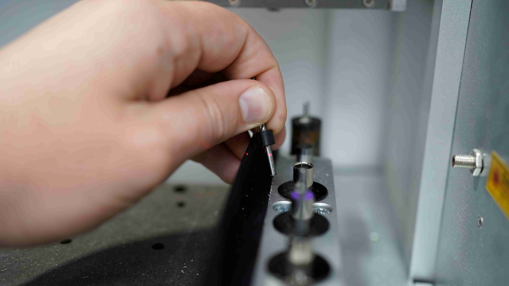
Si le capteur ne se déclenche jamais, quelle que soit la distance, il est défectueux (veuillez contacter le support)
Si l'outil ne déclenche pas le capteur devant le capot arrière, vous devrez peut-être régler manuellement la distance du capteur.
Pour régler manuellement la distance de détection du laser, vous devez ouvrir l'arrière de la machine (voir la rubrique « Maintenance »).
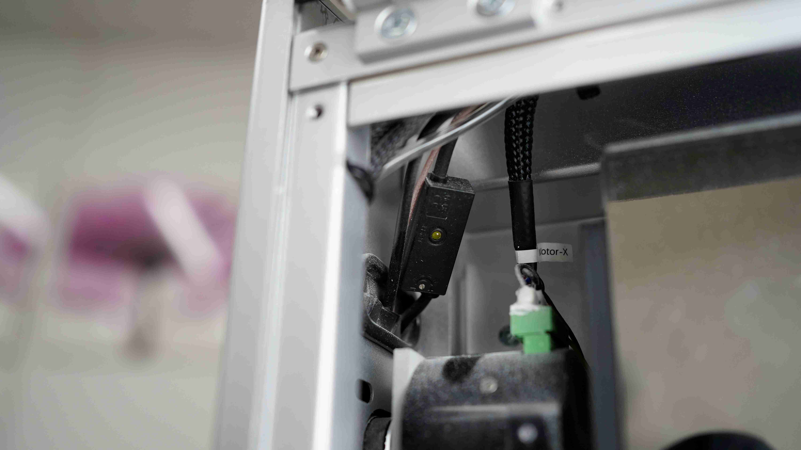
- Repérez le contrôleur du capteur dans le coin supérieur gauche, à l'arrière de la machine.
- Un voyant vert du module doit s'allumer lorsque le capteur est déclenché.
- À l'aide d'un petit tournevis, vous pouvez régler la distance de détection et la distance de contrôle en observant le voyant de déclenchement du contrôleur. Utilisez une feuille de papier blanche pour vérifier dans le menu si le capteur vert est déclenché.
- Tenez la feuille de papier à environ 100mm du capteur.
- Une fois le réglage terminé, essayez un autre changement d'outil.
- Si l'erreur persiste (contactez le support)
L'outil reste dans la pince après sa libération
Cela peut avoir deux causes :
1. Désalignement de l'ATC (voir la rubrique «Désalignement de l'ATC »)
2. L'action de libération ne suffit pas à libérer la fraise du porte-fraise.
Pour régler ce problème, accédez à « Action distance » dans la section ATC des réglages avancés.
Augmentez cette valeur par incréments de 0.1mm jusqu'à ce que l'outil se dépose facilement. (Ne la réglez pas trop, 0.3mm maximum.)
(contactez le support si le problème ci-dessus n'est toujours pas résolu)
Un bruit de meulage provient de l'ATC lors du changement d'outil.
Lorsqu'un bruit de meulage provient du mécanisme ATC pendant un changement d'outil, plusieurs causes sont possibles :
- Le mécanisme ATC (écrou en laiton) est peut-être bloqué
- La fin de course peut ne pas fonctionner
- La distance d'action est trop grande
La première étape pour résoudre ce problème consiste à vérifier, au sommet du mécanisme ATC, la présence d'une broche fendue qui permet de libérer le mécanisme.
(Les machines plus anciennes ne disposent pas de cette fente.)
(IMAGE DE RÉFÉRENCE de la fente)
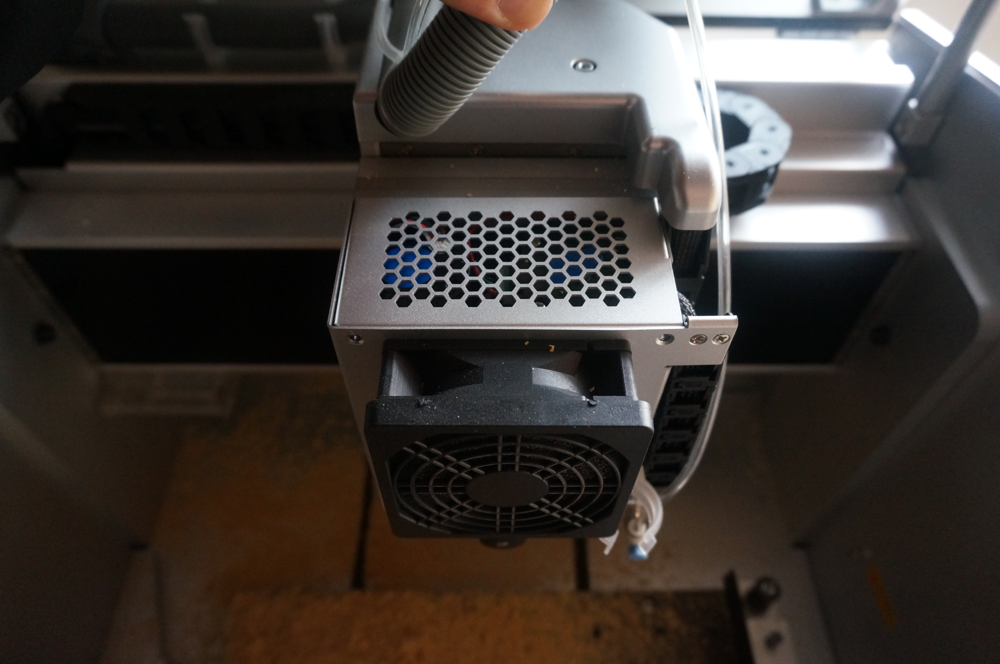
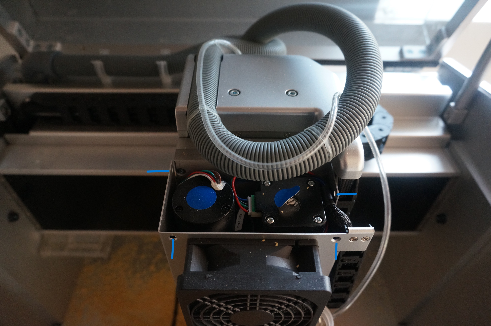
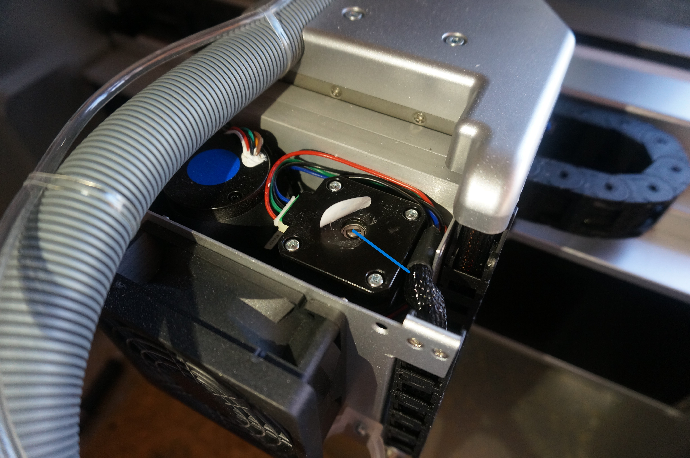
Tournez la fente avec un tournevis pour essayer de libérer l'écrou intérieur.
Tournez dans le sens horaire pour faire monter l'écrou en laiton et dans le sens antihoraire pour le faire descendre.
Si cela ne résout toujours pas le problème et que la fente tourne facilement, vous devez poursuivre l'analyse.
Si votre machine ne possède pas cette fente, contactez le support (support@makera.com) ou poursuivez avec les instructions ci-dessous.
Retirez le capot de la broche
IMAGE DE RÉFÉRENCE du retrait du capot
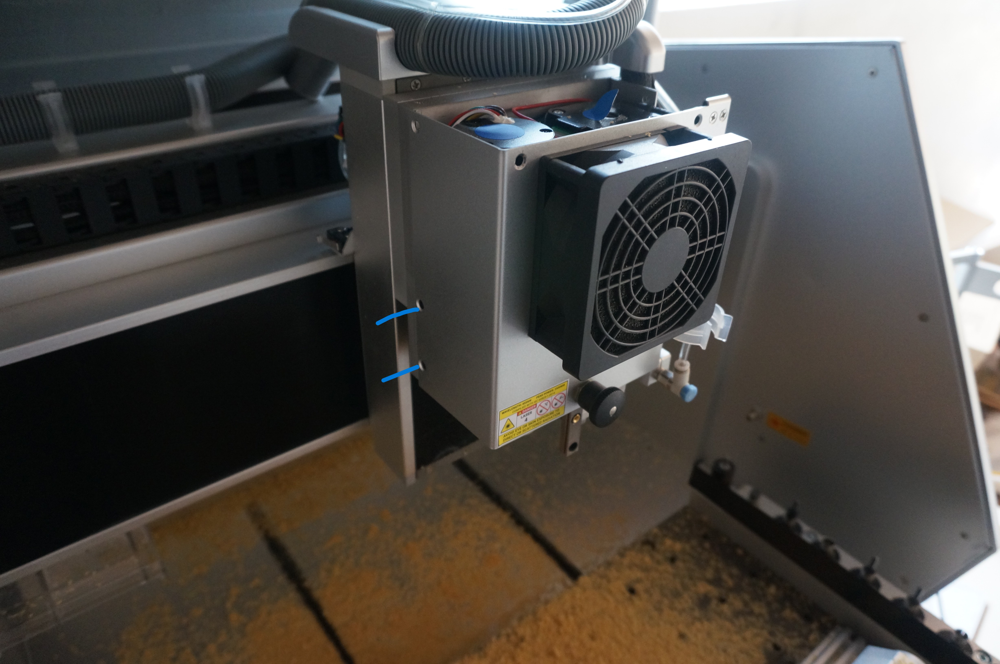
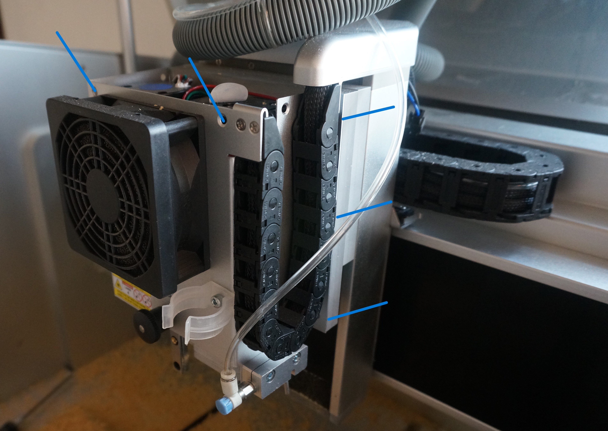
et observez le mouvement de la broche de déclenchement de la fin de course.
IMAGE DE RÉFÉRENCE de la zone de déclenchement
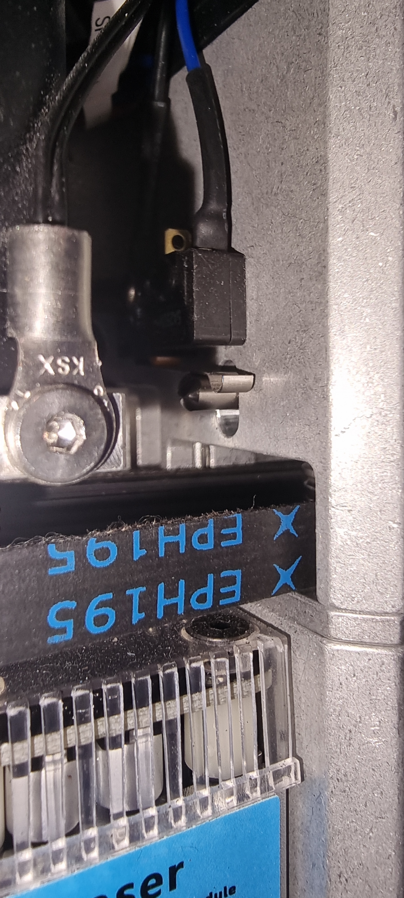
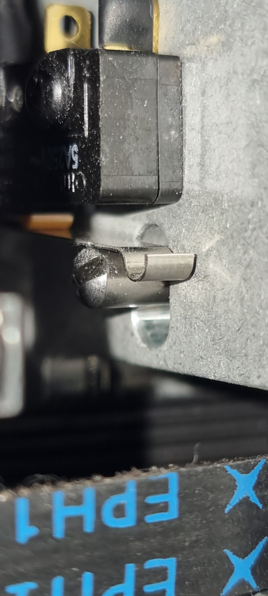
La position neutre de l'ATC correspond à la broche du mécanisme orientée vers le haut et à la pince engagée.
L'écrou en laiton pousse sur la pince pour libérer la fraise.
La fin de course déclenche le point d'arrêt de la bride, puis celle-ci revient légèrement ; cette distance est appelée distance de retrait.
Si la fin de course ne déclenche pas le retour de la broche vers le bas, elle doit être vérifiée.
Si le problème persiste après la procédure ci-dessus, contactez support@makera.com